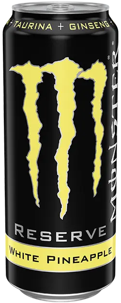
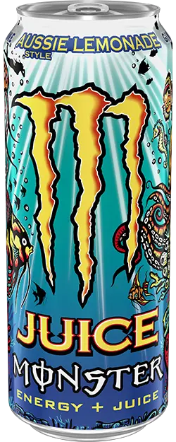

Is Monster Ultra Watermelon discontinued?
A major U.S. retailer reset placed Ultra Watermelon among Monster’s 2026 cuts, even while old catalog pages remain online.
A current, evidence-graded guide to Monster flavors that left U.S. distribution, changed form, or are only rumored to be next.
Monster has a large portfolio, frequent line extensions, and product pages that can remain online after normal distribution changes. That makes a simple list unreliable unless every flavor is checked against current U.S. catalogs, retailer resets, and dated reporting. This page separates supported discontinuations from package or formula changes and from claims that are still only rumors.
The confirmed U.S. departures in this index include Ultra Watermelon, Reserve Peaches N Creme, and Ultra Red. Reserve Orange Dreamsicle needs a more precise answer: the Reserve version ended, while Monster introduced a new standard Orange Dreamsicle. Ultra Fantasy Ruby Red, Rehab Green Tea, and Rio Punch remain on the watch list because a specific report names an October date but Monster still presents them publicly.
Reserve White Pineapple now has a separate report covering its apparent U.S. lineup exit, official overseas listings, and resale availability. Its evidence grade is lineup-based: no dated manufacturer discontinuation notice was located.
Aussie Style Lemonade was reported as a 2025 U.S. discontinuation and is absent from the current American catalog. Our September 16, 2026 review also checks its continuing official listings in Australia and Great Britain. This is a current status review of an earlier departure, not a newly announced 2026 cut.
A major U.S. retailer reset placed Ultra Watermelon among Monster’s 2026 cuts, even while old catalog pages remain online.

The creamy, full-sugar peach Reserve flavor was removed in the 2026 reset and has no direct replacement.

Ultra Red is discontinued in normal U.S. distribution, but stale brand pages, isolated restocks, and imports keep the question confusing.

Where White Pineapple stands in the U.S., which countries still list it, and how to find full cans instead of empty collectibles.

The 2025 U.S. discontinuation report, the overseas listings that remain, and what to check before buying a can in 2026.

The black Reserve can and its formula ended, but Monster relaunched Orange Dreamsicle outside the Reserve line.

A reported corporate email names October 1, but Monster still lists Ruby Red. The rumor is credible enough to watch, not confirm.

A specific report names Rehab Green Tea for October 1, while Monster’s official page still treats it as current.

Rio Punch appears in the same October rumor as Ruby Red and Green Tea, but public Monster sources still list it.
Our September 13 review examines the October 1 claim, Monster's official U.S. pages, and what an empty shelf actually tells you.
Discontinued Club checks official U.S. product catalogs first, then looks for dated brand statements, distributor notices, retailer resets, and broad changes in availability. A single empty shelf, a marketplace listing, or an old product page is not enough by itself.
International production is still useful context. It can explain why a flavor appears in search results or can be imported after American distribution ends. For this index, however, a product that is no longer sold through normal U.S. channels is treated as discontinued in the United States.
Remaining inventory does not reverse a discontinuation. Retailers and collectors can sell sealed stock long after a product leaves production. Product pages linked from these reports show the exact item offered by Discontinued Club rather than a generic replacement photo.
Ultra Watermelon, Reserve Peaches N Creme, and Ultra Red are classified as discontinued in normal U.S. distribution based on the evidence reviewed for their individual reports.
It appears to have left the U.S. range, while remaining officially listed in Spain, Portugal, and South Africa. The report identifies that conclusion as lineup-based rather than an authenticated manufacturer notice.
Not yet in this guide. They are labeled rumored, not confirmed, because public Monster pages remain active and no official public announcement has been located.
The older Monster Reserve Orange Dreamsicle version is discontinued, but a newer standard Monster Orange Dreamsicle continues the flavor concept.